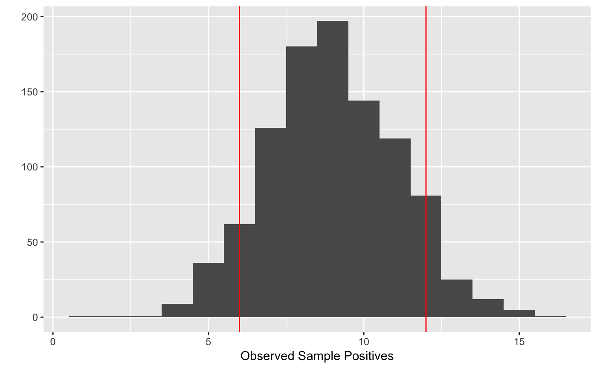

sample_finite_population.RdSample from finite population with known number of true positives
sample_finite_population(n, N, p = NULL, npositive = NULL, replicates = 1)
| n | sample size |
|---|---|
| N | Population size |
| p | positive probability (e.g. of being an LHN) |
| npositive | Number of true positives (e.g. actual number LHNs in a tract) |
| replicates | Number of samples to draw |
A vector of length replicates with counts of sample positives.
Imagine we have integers 1:N (the population size). We say
that the first npositive integers are the true positives in the
population (npositive may be 0).
Now we draw a sample of size n from the integers 1:N. For
this sample we say that the observed positives are those integers
<=npositive.
NB this is the hypergeometric distribution.
truepos_given_sample for estimating the true number of
positives in a finite population given a sample.
Other population-sampling: prop.ci,
required.sample.size,
truepos_given_sample
# Draw a random sample of size 24 tracings for a population of 96 profiles in # a tract known to have 36 LHNs sample_finite_population(24, N=96, npositive=36)#> [1] 9# Draw 1000 random samples, plot the distribution of observed sample positives rand.samples=sample_finite_population(24, N=96, npositive=36, replicates=1000) mean(rand.samples)#> [1] 8.994quants=quantile(rand.samples, c(0.05,0.95))library(ggplot2) qplot(rand.samples, binwidth=1, xlab='Observed Sample Positives') + geom_vline(xintercept = quants, colour='red')# Compare with binomial distribution resdf=data.frame(x=popsample(10,50,p=.5, replicates = 100000), type='popsample')#> Error in popsample(10, 50, p = 0.5, replicates = 1e+05): could not find function "popsample"resdf=rbind(resdf, data.frame(x=rbinom(100000, size=10,p=.5), type='rbinom'))#> Error in rbind(resdf, data.frame(x = rbinom(1e+05, size = 10, p = 0.5), type = "rbinom")): object 'resdf' not found#> Error in ggplot(data, aesthetics, environment = env): object 'resdf' not found